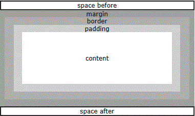

XSL-FO 块
XSL-FO の出力はブロック領域内に配置されます。
XSL-FO 页面（Page）、流（Flow）以及块（Block）
コンテンツの「ブロック」は「ページ」に「フロー」し、その後メディアに出力されます。
XSL-FO出力は通常 <fo:block> 要素内にネストされ、<fo:block> は <fo:flow> 要素内にネストされ、<fo:flow> は <fo:page-sequence> 要素内にネストされます：
<fo:flow flow-name="xsl-region-body">
<fo:block>
<!-- Output goes here -->
</fo:block>
</fo:flow>
</fo:page-sequence>
ブロック領域の属性
ブロックは、矩形ボックス内に配置される出力シーケンスです。
This block of output will have a one millimeter border around it.
</fo:block>
ブロック領域は長方形のボックスであるため、多くの共通の領域属性を共有できます：
- space before と space after
- margin
- border
- padding

space beforeとspace afterブロックとブロックの間を分割する役割を果たす空白です。
marginブロックの外側の空白領域です。
border領域の外縁にある矩形です。その四辺はそれぞれ異なる幅を持つことができます。また、異なる色や背景画像で塗りつぶすこともできます。
paddingborder領域とcontent領域の間に位置する領域です。
content領域には、テキスト、画像、グラフィックなどの実際のコンテンツを含めることができます。
块边距（Block Margin）
- margin
- margin-top
- margin-bottom
- margin-left
- margin-right
块边框（Block Border）
枠線スタイル属性：
- border-style
- border-before-style
- border-after-style
- border-start-style
- border-end-style
- border-top-style（等同于 border-before）
- border-bottom-style（等同于 border-after）
- border-left-style（等同于 border-start）
- border-right-style（等同于 border-end）
枠線の色属性：
- border-color
- border-before-color
- border-after-color
- border-start-color
- border-end-color
- border-top-color（等同于 border-before）
- border-bottom-color（等同于 border-after）
- border-left-color（等同于 border-start）
- border-right-color（等同于 border-end）
枠線の幅属性：
- border-width
- border-before-width
- border-after-width
- border-start-width
- border-end-width
- border-top-width（等同于 border-before）
- border-bottom-width（等同于 border-after）
- border-left-width（等同于 border-start）
- border-right-width（等同于 border-end）
块填充（Block Padding）
- padding
- padding-before
- padding-after
- padding-start
- padding-end
- padding-top（等同于 padding-before）
- padding-bottom（等同于 padding-after）
- padding-left（等同于 padding-start）
- padding-right（等同于 padding-end）
块背景（Block Background）
- background-color
- background-image
- background-repeat
- background-attachment（scroll 或 fixed）
块样式属性（Block Styling Attributes）
ブロックは、個別にスタイル設定できる出力シーケンスです：
This block of output will be written in a 12pt sans-serif font.
</fo:block>
字体属性：
- font-family
- font-weight
- font-style
- font-size
- font-variant
文本属性：
- text-align
- text-align-last
- text-indent
- start-indent
- end-indent
- wrap-option（自動折り返しを定義）
- break-before（ページ区切りを定義）
- break-after（ページ区切りを定義）
- reference-orientation（90度刻みの文字回転を定義）
实例
space-before="5mm" space-after="5mm">
RUNOOB
</fo:block>
<fo:block text-indent="5mm" font-family="verdana" font-size="12pt">
At RUNOOB you will find all the Web-building tutorials you
need, from basic HTML and XHTML to advanced XML, XSL, Multimedia and WAP.
</fo:block>
结果：
|
RUNOOB At RUNOOB you will find all the Web-building tutorials you need, from basic HTML and XHTML to advanced XML, XSL, Multimedia and WAP. |
上の例をご覧ください。多くの見出しと段落を含む文書を生成する場合、非常に多くのコードが必要になります。
通常、XSL-FOドキュメントは、先ほど行ったようにフォーマット情報とコンテンツを組み合わせることはありません。
XSLT の助けを借りれば、フォーマット情報をテンプレートに組み込み、より簡潔なコンテンツを作成することができます。
このチュートリアルの後の章で、XSLT テンプレートを使用して XSL-FO を組み合わせる方法を学びます。
其他扩展